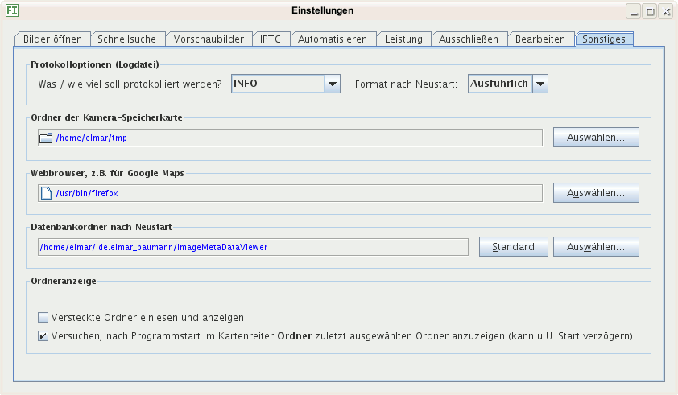

Der Programmablauf wird protokolliert und das Protokoll in eine Logdatei geschrieben. Diese kann angezeigt werden durch Klick auf eine Schaltfläche am unteren Fensterrand. Sie hat ein grünes Häkchen, falls alles ok ist und ein rotes Kreuz, falls Fehler auftraten. Bedeutungen der Auswahl:
Wählen Sie WARNUNG oder INFO, solange keine Probleme bestehen und zur Fehlerbehebung AM FEINSTEN. Meldungen, die keine Warnungen sind oder keine wichtigen Fehler, werden in die Standardausgabe des Betriebssystems geschrieben, andernfalls würde die Protokolldatei viele Megabyte groß. Die Standardausgabe sehen Sie im Fenster Ausgaben, zu erreichen über die Schaltfläche Ausgaben am unteren Fensterrand.
Hier können Sie einen Ordner auswählen, von dem alle Bilder einer Speicherkarte in einen Ordner kopiert werden.
Wählen Sie den Ordner aus, in dem der Inhalt Ihrer
Kamera-Speicherkarte angezeigt wird, wenn Sie Ihre Kamera mit dem
Rechner verbinden oder die Karte in einen Kartenleser einführen:
Unter Windows einen Laufwerksbuchstaben, unter Linux einen Ordner,
beispielsweise /mnt/compactflash. Das Laufwerk oder der
Ordner werden nach Bildern durchsucht einschließlich aller
untergeordneten Ordner.
Hier wählen Sie einen Webbrowser aus, der aufgerufen wird, falls Sie mit dem Internet verbunden werden müssen, beispielsweise zum Anzeigen von Satellitenbildern des Aufnahmeorts bei GPS-Daten im Bild.
Sie können die Datenbank in einem anderen Ordner anlegen lassen. Wollen Sie Ihre bisherigen Daten übernehmen, kopieren Sie aus dem aktuellen Datenbankordner, der im Dialog angezeigt wird, bevor Sie es ändern, folgende Dateien nach Beenden von Bilder und vor einem Neustart:
thumbnails, dieser enthält die
Vorschaubilder
database starten, z.B.
database.data
So können z.B. mehrere - nicht gleichzeitig! - die selbe Datenbank benutzen und bearbeiten oder Sie wählen einen Ordner aus, der täglich automatisch gesichert wird, sodass das Backup der Datenbank gewährleistet ist.
Wollen Sie Bilder archivieren, die in versteckten Ordnern gespeichert sind, kreuzen Sie dieses Kästchen an.
Ist diese Option angekreuzt, wird versucht, nach dem Start den Ordner auszuwählen, der beim Beenden von Bilder im Kartenreiter Ordner ausgewählt war. Hat ein Laufwerk viele Ordner, kann dies den Start verzögern. Unter dem Betriebssystem Windows kommt es aus unterschiedlichen Gründen zur Verzögerung, beispielsweise wenn ein Laufwerksbuchstabe mit einem Netzlaufwerk verknüpft war und dieses nicht erreicht werden kann.
